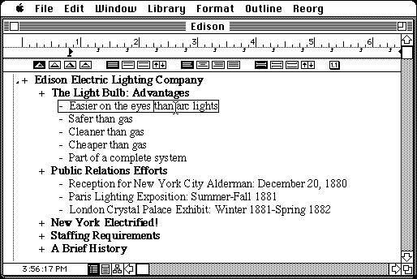

Download (external link)
more31.sit.hqx (2.8M) MORE 3.1
copyright: Symantec Corporation
mod date: Dec 2, 1991
license: ?
from url :
Outliners.Com : MORE 3.1, 12/2/91
An outliner. Versions 3.0 and 1.1c are also available.

Here is the md5 checksum for the download, signed with Gryphel Key 5:
--------- GRY SIGNED TEXT --------- 15986caf787a776687fe65cb7c904765 more31.sit.hqx ------- BEGIN GRY SIGNATURE ------- Gry/4Xa8CFcUzxdN/GSOKGTEMpaade+CDWfnELdTSaStIWMUtZQ0p58QSs1+iLOJ xSvFM5N3DrBbWZFw7pyhP4rvOdlRJYb4pK++gQIdtN2CLrXgs2Gi+qGJVihmD24/ UcuHoQfIjUT8Dp6dCid9e3S2mxolivfHk6XWbfsDQDjp4OHJmsbVs/oGBu3TTNTH -------- END GRY SIGNATURE --------